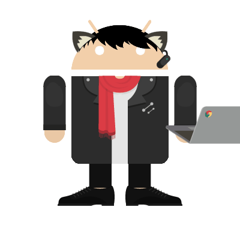

Name: Frederick
Grade: 10
| Period | Subject |
|---|---|
| 1 | English 2 |
| 2 | World History |
| 3 | Vietnamese 2 |
| 4 | AP Computer Science Principles |
| 5 | Chemistry |
| 6 | Pre-Calculus |
Hello, hello, yes yes yes... is this thing on? Oh, hello! My name is Frederick Vo, and I am a sophomore. Oh, you want to know something about me? I'm the youngest in my family, and I have two brothers. More, you say? What else is there? Well, for starters, I'm really into gaming, preferably rhythm-based games or MOBAs, but I don't mind playing a console game or two. I read, but I mainly read manga and almost nothing else. I don't watch anime however, no! I think it kills more of my free time than reading, and it's typically something I don't want to do in my free time. I mainly listen to music in the genres Power Metal, Drum 'n' Bass, Glitch Hop, and Happy Hardcore, as well as various game soundtracks. I hope to do well in school and plan to pursue becoming a pharmacist when I grow up. What I like about school is that I'm able to see my friends again.
The only thing we have to fear is fear itself.
- Franklin Delano Roosevelt